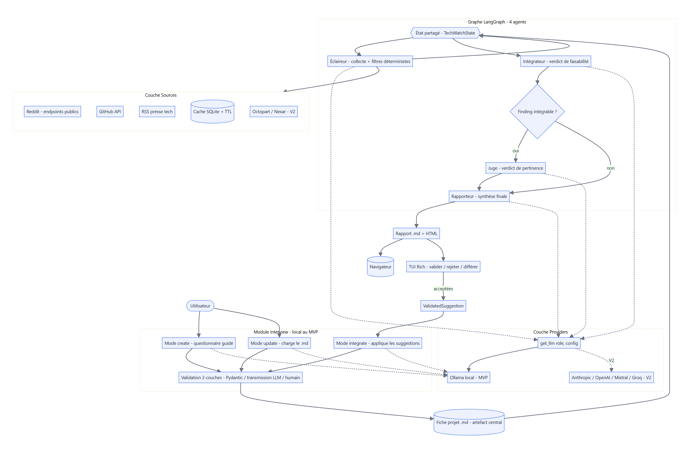
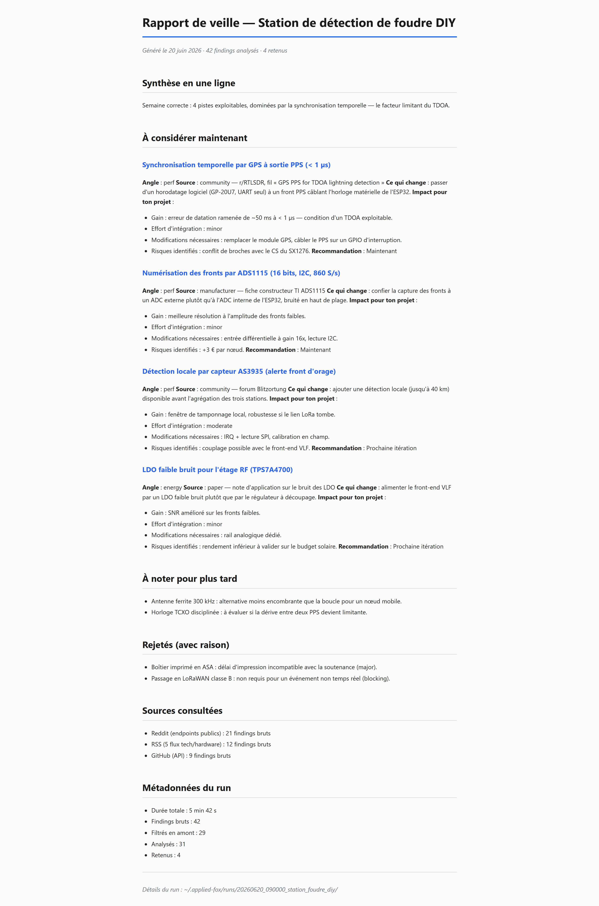

Local AI / multi-agent
Applied Fox
The R&D assistant that never leaves your machine and never decides for you. A multi-agent tech watch system, 100 % local via Ollama.

Context
AI tools for engineers suffer from two flaws: they send your data to servers you don't control, and they tend to take over your project. Applied Fox is built against both. Goal: structured, local, human-controlled tech watch for long projects where context knowledge is the main investment.
Approach
You describe your project once in a structured .md file (components, constraints, goals, next deliverable). Applied Fox runs a chain of 4 local agents that collect, filter, evaluate and synthesize relevant information, then you validate each suggestion.
Scout → Reddit + RSS + GitHub
Integrator → feasibility eval
Judge → ranking + ETA
Reporter → HTML report + 3–8 prioritized suggestions
→ human validation: accept / reject / defer
Each agent has a strict Pydantic contract: if one fails, you know exactly which one and why. Three layers of deterministic filters short-circuit ~70 % of LLM calls before even querying the model.
Non-negotiable constraints: local by default (no silent network calls, no telemetry), hot-swappable LLMs per role, human stays the final arbiter.

Results
- MVP delivered: interview module (4 modes), 4-agent pipeline, 3 active sources, validation loop, multi-project menu.
- Full run: ~4–6 min cold, ~1–2 min with warm LLM cache (RTX 3070 8 GB).
- Judge runs in ~10 s on ~20 findings, thanks to deterministic filters (−70 % LLM calls).
- Zero data sent to any cloud, zero subscription.

Demo & code
No online demo — that's the point: everything runs locally. The repo contains an install guide, a step-by-step demo and architecture documentation.